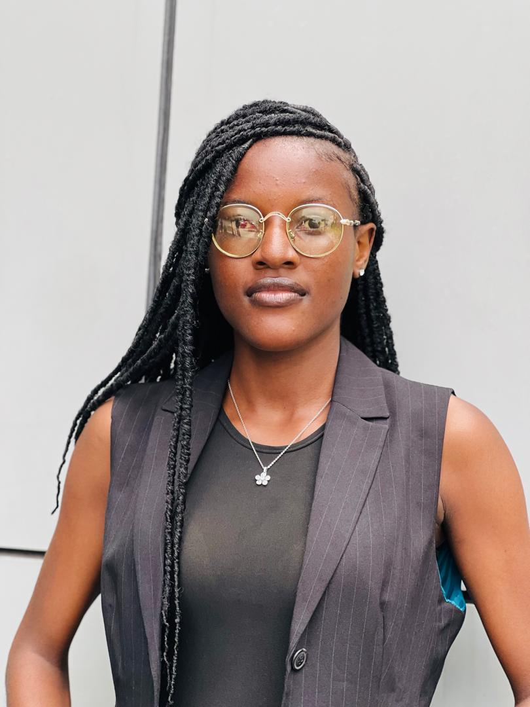

Alao Temitope

Summary
Law graduate transitioning into front-end web development with a strong foundation in content writing. Currently learning HTML and other web technologies, eager to combine my analytical skills from legal studies with creativity in coding. Passionate about building user-friendly websites and continuously developing my skills in front-end development.
Education
- Bachelor of Laws (LL.B) - University of Lagos, Nigeria (2024)
Work Experience
Content Writer-Gix Investment Limited
August 2023-Present
- Developed and wrote compelling content for clients, aligning with their brand and messaging
- Ensured high-quality and engaging copy for websites, blogs, and other digital platforms
- Collaborated with a team to create content strategies for improved engagement
Ongoing
- Provided personalized lessons for children, focusing on foundational academic skills
- Created tailored lesson plans to meet individual learning needs
- Fostered a positive and engaging learning environment
Skills
- Content Writing: Proficient in creating engaging and brand-aligned content for various platforms.
- HTML: Beginner-level knowledge in web development, currently learning.
- Project Management Tools: Experience using Asana and Notion for task management and team collaboration.
- Organizational Skills: Strong ability to manage multiple tasks and prioritize efficiently.
Others